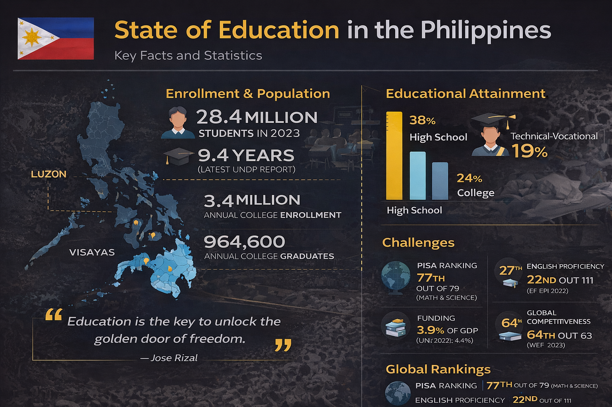
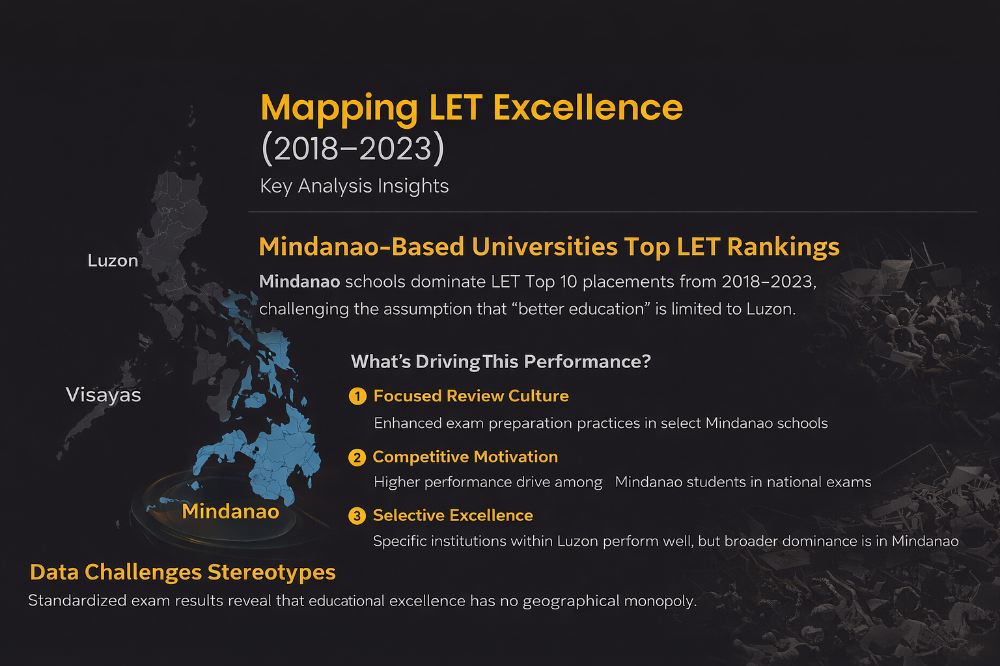

Beyond Rankings: LET Performance Trends


Project Overview
This project presents a comprehensive analysis of the Top 10 LET Passers in the Philippines (2018–2023), aiming to uncover performance patterns, institutional dominance, and regional trends in board examination outcomes.
Through a structured application of frequency distribution, time-series trend analysis, and descriptive statistical measures (mean, median, mode, variance, and standard deviation), the study transforms raw ranking data into measurable insights.
Rather than focusing solely on rankings, this analysis emphasizes data-driven evaluation of academic performance, challenging assumptions about regional educational superiority and highlighting evidence-based comparisons across institutions.
🔗Project Repository: GitHub – LET Performance Analysis (2018–2023)
Top Performing Universities (Frequency)
- University of Mindanao – Davao City (50 appearances)
- University of Southeastern Philippines – Tagum (43)
- University of Southeastern Philippines – Davao City (35)
- Mindanao State University – General Santos (28)
- University of the Philippines – Diliman (23)
Gender Distribution
Female passers (550) outnumbered male passers (308), representing 64.1% of the total.
Average Rating Trend (2018–2023)
October 2022 achieved the highest average rating, while March 2018 recorded the lowest average rating during the observed period.
Distribution by Island
Mindanao leads with 55.6%, followed by Luzon (27.6%) and Visayas (16.8%).
Private vs Public Schools
Private schools account for 52.9%, while public schools represent 47.1%. The difference is not statistically significant.
Descriptive Statistics
Measures of Central Tendency
- Mean Rating: 91.41
- Median Rating: 91.4
- Mode Rating: 91.4
Measures of Dispersion
- Variance: 1.87
- Standard Deviation: 1.36
- Range: 8.0
Per Level Comparison
- Elementary Mean: 91.18 | SD: 1.71
- Secondary Mean: 91.64 | SD: 0.86
Geographical Distribution of Top LET Performers
Key Finding
The data clearly reveals the strong dominance of Mindanao-based universities in LET Top 10 placements from 2018–2023, accounting for the highest frequency of appearances among the three island groups.
Why This Matters
This geographic concentration suggests that certain regional institutions may possess effective academic preparation strategies, competitive review programs, or stronger institutional support systems that consistently produce high-performing LET candidates.
Implications & Recommendations
- Benchmarking Best Practices: Education institutions in other regions may study and adapt the training methodologies of top-performing Mindanao schools.
- Policy Review: Regional education authorities may evaluate whether curriculum enhancements or review programs contribute to performance gaps.
- Further Analysis: Additional metrics such as overall passing rate, faculty credentials, and institutional resources should be examined to validate performance drivers.
Overall, the ratings demonstrate stable performance trends over time with minimal variation, indicating consistency among top candidates rather than random spikes in performance.
Addressing the Stereotype: “Better Education” vs. Performance Outcomes
A common perception suggests that Luzon, particularly institutions in major urban centers, offers “better education” due to infrastructure, funding, and institutional prestige. However, the LET Top 10 data challenges this assumption.
Despite this perception, Mindanao-based universities recorded the highest frequency of Top 10 placements from 2018–2023. This indicates that examination performance is not solely determined by geographic location or institutional reputation.
Possible Explanations
- Focused Review Culture: Some Mindanao institutions may emphasize board exam preparation more intensively.
- Competitive Motivation: Students from emerging academic regions may exhibit higher performance motivation in national examinations.
- Selective Excellence: While Luzon has a larger number of institutions overall, high performance in Top 10 rankings may reflect concentrated excellence within specific schools rather than overall quantity.
The data suggests that educational quality should be evaluated using measurable outcomes rather than assumptions based on region. Performance in standardized examinations such as the LET provides an objective lens for comparison.
Therefore, the findings highlight the importance of data-driven evaluation over stereotype-based narratives when assessing academic performance across regions.